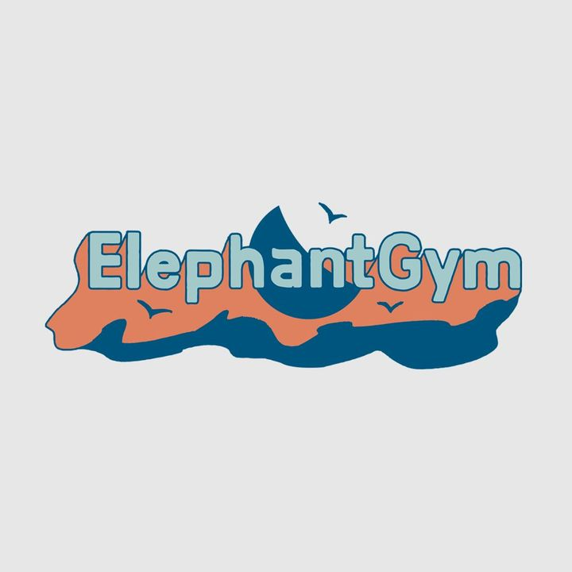

Bass - driven Math Rock band from Kaohsiung, Taiwan

Profile
Elephant Gym is a bass driven, Math-Rock band from Kaohsiung, Taiwan, Formed in 2012.
The Band is composed of Tif on bass, Tell on guitar and Chia-Chin on drums. The music
of Elephant Gym is known for clear and memorable bass line, emotional guitar riffs and
melodic drumming. Most songs are instrumental. In 2013, Elephant Gym has started to
invite singers to compose with them.
Tell and Tif are sibling. In their childhood, their mother had taught them classical
music until their adolescence. Later on, they had a big crush on rock music, especially
post – rock and math -rock. Tell met Tu in high school music club. After realizing they
all like the same music genre, they decided to form a rock band.
Recommanended Tracks
Underwater
Tired of drifting, we sneak into the deepest water ____
Arrangement：Elephant Gym & Joshua Lee
Producer：Joshua Lee
Guitar：Tell Chang //Bass：KT Chang //Drums：Chia-Chin Tu //Synthesizer/Keyboard：Joshua Lee
Recording Engineer：J-Jyun Ciou
Recording Studio：Elephant Gym Studio
Mixing Engineer：Joshua Lee
Mastering：Brian Elgin 【Sentient Sound Labs】
Quilt
Lyrics
A bright morning light
Tells me a truth
You’re still breathing as my girl
I just hope it last so long
A quilt white silk
Knows our truth should kindly warm my heart.
But always lost. Where are you?
Real? Dream?
Real? Dream?
I feel alone. finding some pieces of
Your love in my true days
No matter how romantic or real
Our love will one day fade away
Real? Dream?
Real? Dream?
I won’t be alone. finding some places where
We can live for good
No matter how romantic or real
Our love will one day fade away
Real? Real?
Real? Real?
My sweetest love, my greatest friend I love.
I’ll miss our wonderful days
For a good Goodbye, for the sweetest lullaby
Warm all the memories
太誠實 卻怕諷刺/Too honest, but afraid of irony
畏懼停滯 可腳下的路不一致/Fear of stagnation, inconsistent path at the foot
風景相似 想去的地方是/Similar in landscape, where I want to go is
是未知 漫漫長日/Is unknown, long day
曾幾何時 太習慣失落的樣子/Once Upon a time, too accustomed to losing
即便如此 一切不算太遲/Even so, everything is not too late
Composition：Tell Chang & KT Chang
Lyrics：KT Chang
Vocal：KT Chang
Electric Guitar：Tell Chang
Bass：KT Chang
Drums：Chia-Chin Tu